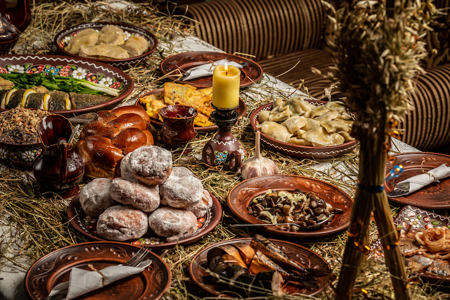

Традиції та звичаї українців
Повсякденне життя українського народу, а також святкування часто супроводжуються цікавими звичаями, які пройшли через століття. Як правило, українська молодь, із задоволенням шанує ці традиції, зберігаючи духовну спадкоємність разом з їх предками. Крім того, у всіх цих звичаях можна ясно помітити, як язичницькі і християнські вірування переплетені між собою, і як вони наповнюють святковістю обряди. Гості країни мають унікальну можливість поринути в світ української культури, взяти участь у святкуванні Різдва, Масляної, Великодня і Івана Купала; насолоджуючись таємничим обрядом весілля; слухати колядки – «kolyadki» і «gaivki», дегустацією смачної ритуальної їжі, такої як кутя (солодке зерно), пасха і навіть приєднатися до магічного писанкарства великодніх яєць.
Різдво
Під час різдвяних свят в Україні, співають колядки, діти виконують різдвяні пісні йдучи від хати до хати і бажають господарям цих будинків миру і процвітання . При цьому посівають пшеницею або ячменем ,які, як вважають, принесуть добробут і щастя в дім. За це господарі дякують дітям , дарують їм цукерки і монети, які приносять удачу протягом всього року. На Святвечір люди строго дотримуються традиції сервірування .12 пісних страв – рівне число апостолів. Традиційно він включає в себе кутю, узвар, свіжоспечений хліб і вареники. Той, хто знаходить монетку всередині вареника -буде щасливим в новому році. Особливе місце в будинку приділяється Дідуху, його роблять із стебел різних злаків: пшениці, вівсу, жита і прикрашають м’яким запашним сіном. Співають різдвяні пісні за столом, згадуючи все добре, що сталося протягом останнього року і бажають один одному здоров’я і щастя.

Великдень
Головне православне свято. У цей день душі віруючих переповнені радістю, випромінюють щастя, природа також сприяє цьому. Віздступають ознаки зимового сну ,весняним теплом наповнюється природа та душі людей. Прийнято не спати в ніч перед Великоднем, напередодні всі йдуть до церкви. Люди приносять різноманітні страви в кошику для освячення до церкви і коли повертаються додому, наступає пора перервати піст на насолодитися смаколиками. Незалежно від того що на столі може бути кулінарне розмаїття прийнято почати свято пасхальним хлібом. В цей день кожен православний християнин вітає інших словами: Христос воскрес! І отримує підтвердження у відповідь : Воістину Воскрес!
Івани Купала
Стародавнє слов’янське свято Івана Купала організовують на честь сонця і відзначають день літнього сонцестояння. Свято наповнено ритуалами, пов’язаними з водою, вогнем і травами. У цей день сміливці стрибають через вогонь, а опівночі люди шукають квітку папороті, щоб отримати можливість зазирнути в майбутнє і знайти незлічені багатства. Дівчата роблять вінки з польових квітів. Пускають їх на воду і спостерігають : якщо вінок попливе- дівчина вийде заміж в цьому році, якщо потоне – ні.

Весільні традиції
Сім’я має велике значення для українців, тому за весільними традиціями, звичаями шлюбу та хрещення стежать з особливою увагою. Весільні церемонії починаються з обряду сватання: наречений посилає старших, шанованих людей, які пропонують батькам нареченої видати їхню дочку заміж. У випадку позитивної відповіді дівчина передає вишитий рушник, у випадку відмови старші отримують гарбуз. За кілька днів до весілля печеться ритуальний хліб – коровай. У день весілля наречений заходить в будинок нареченої, щоб забрати її до церкви, але перед цим має заплатити викуп. Після традиційного шлюбу святкування продовжується в будинку чоловіка. Після обіду молода дружина розплітає косу і покриває голову хустиною як знак того, що вона стала заміжньою жінкою. Свята, ігри та пісні часто продовжуються наступного дня. Окрім цього, українські весільні традиції містять багато інтересних фактів, які додають ще більшої колоритності й унікальності кожному святкуванню.